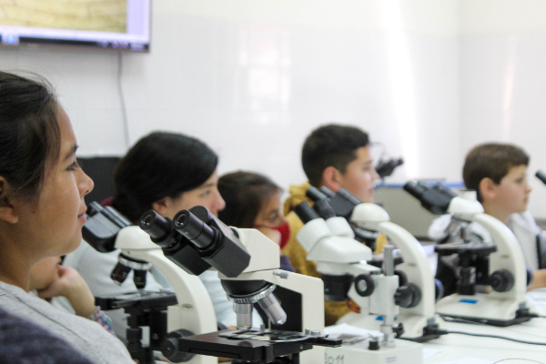
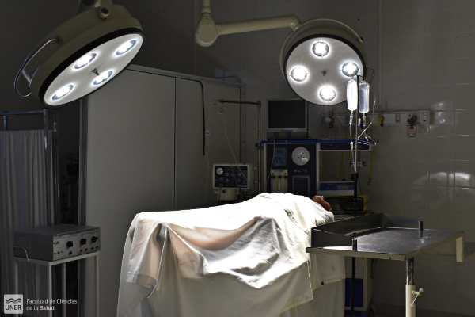
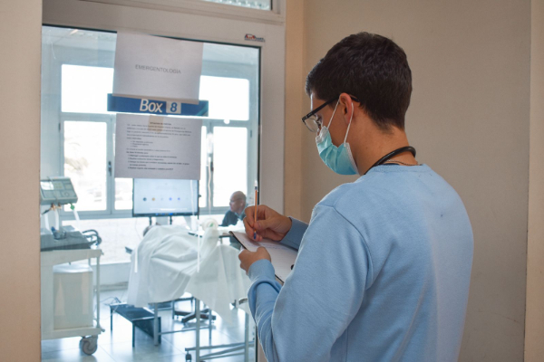

Universidad Nacional de Entre Rios



CARRERAS DE GRADO
Lic. en Instrumentación Quirúrgica
Duración: 5 añosEl Licenciado en Instrumentación Quirúrgica será un profesional que podrá desarrollar actividades de asistencia, gestión, docencia, investigación y extensión.
- Organizar, gestionar y dirigir los servicios de Instrumentación Quirúrgica en los diferentes niveles del sistema de servicios de salud.
- Administrar, asesorar y controlar la calidad de todos los servicios con actividad quirúrgica.
- Conformar equipos interdisciplinarios vinculados a la salud para definir los principios, criterios, políticas y objetivos de todas las áreas con actividad quirúrgica.
- Promover, planificar y desarrollar programas de educación y capacitación permanente para las distintas categorías del recurso humano de las áreas quirúrgicas.
- Supervisar la selección y preparación del instrumental, equipos, materiales e insumos de todas las áreas con actividad quirúrgica
- Integrar equipos intra, inter y multidisciplinario de investigación, en temas relevantes para su profesión.
- Asesorar sobre aspectos de su competencia en el área de la asistencia, docencia, administración e investigación.
- Participar en el planeamiento de acciones interdisciplinarias e intersectoriales en el área de salud.
- Integrar organismos competentes nacionales e internacionales para brindar asesoramiento de la Instrumentación Quirúrgica a equipos responsables de la formulación de políticas y programas de formación y/o ejercicio profesional.
Lic. en Enfermería
Duración: 5 años- Valorar y diagnosticar los requerimientos de los cuidados integrales de enfermería, planificar, evaluar y supervisar la realización de esos cuidados de acuerdo a las necesidades de las personas y la población en todos los niveles de atención y complejidad.
- Organizar, gestionar y evaluar servicios y procesos de enfermería en la prevención de enfermedades y promoción de la salud.
- Dirigir, participar y/o integrar equipos interdisciplinarios de investigación, con el propósito de favorecer el desarrollo profesional.
- Planear y dirigir programas de formación y educación continua para el personal de enfermería y/u otras disciplinas de su competencia.
- Brindar asesoramiento institucional en temas relacionados a la disciplina y según las incumbencias profesionales establecidas en la Ley Nacional 24.004.
Lic. en Kinesiología y Fisiatría
Duración: 5 años- Actuar en organismos asistenciales, hospitales y centros de rehabilitación, en consultorio privado habilitado y en domicilio, con enfermos, con diagnóstico y pedido de apoyo terapéutico.
- Evaluar capacidades psicofísicas relacionadas con función neurológica, articular, muscular y respiratoria en función de su trabajo específico.
- Actuar en organismos deportivos para la terapéutica electro-físico-kinésica, como instructor de kinefilaxia con educación física y juegos, y como orientador en actividades deportivas y competitivas.
- Participar en equipos interdisciplinarios para la realización de programas de atención primaria de la salud a nivel individual, familiar y de grupos comunitarios.
- Realizar estudios e investigaciones referidos al campo de la Kinesiología y la Fisiatría, en los niveles de prevención, tratamiento y rehabilitación.
Lic. en Obstetricia
Duración: 4 años- Desarrollar actividades de promoción y prevención en su comunidad (planificación familiar, preparación para la maternidad, puericultura etc).
- Diagnosticar y controlar embarazo, parto y puerperio normal.
- Asistir partos.
- Realizar monitoreo bio-físico-fetal.
- Practicar medicaciones de urgencia con el alcance establecido en la legislación vigente.
- Dictar cursos de psicoprofilaxis.
- Realizar investigaciones en su especialidad.
- Organizar y gestionar servicios de Obstetricia.
Lic. en Salud Ambiental
Duración: 5 años- abordar integralmente los determinantes de la salud ambiental
- generar, programar y/o participar en actividades de investigación en temas de salud ambiental
- Desarrollar actividades de educación ambiental y difundir sus principios con el fin de promover ambientes saludables
- Integrar, coordinar y/o supervisar equipos interdisciplinarios para la elaboración de estudios ambientales
- Programar, ejecutar y/o asesorar en lo concerniente a servicios de atención primaria ambiental
- Programar, gestionar, ejecutar y/ evaluar estudios de epidemiología ambiental
- Programar, realizar y/o evaluar planes de gestión ambiental ante situaciones de desastres
- Proyectora y/o ejecutar planes de manejo ambiental requeridos en proyectos ejecutivos integrales de pliegos para obras civiles e industriales – actividades para las cuales está capacitado de intervenir integrando equipos interdisciplinarios
- Integrar, coordinar y/o supervisar equipos que planifiquen, programen, diseñen, gestionen y evalúen los procesos involucrados en los sistemas de manejo y tratamiento de residuos sólidos urbanos, patogénicos e industriales
- Integrar, coordinar y/o supervisar equipos que planifiquen, programen, diseñen, gestionen y evalúen los procesos involucrados en los sistemas de abastecimiento de agua potable, urbanas, periurbanas y rurales
- Integrar, coordinar y/o supervisar equipos que planifiquen, programen, diseñen, gestionen y evalúen los procesos involucrados en los sistemas de tratamiento de efluentes cloacales y/o industriales
- Integrar equipos que aborden la Atención Primaria de la Salud
- Asesorar en la implementación de normas ambientales y sistemas de calidad
- Asesorar en lo concerniente al ordenamiento ambiental de territorio
- Identificar y proponer soluciones ante situaciones de deterioro de recursos naturales que puedan generar situaciones de riesgo y vulnerabilidad para las comunidades y salud de las personas
- Integrar equipos que aborden las problemáticas ambientales de cambio climático
- Integrar equipos que promuevan la calidad de vida desde el enfoque de la sostenibilidad ambiental
- Participar en la determinación de las condiciones de higiene y seguridad laboral e higiene y seguridad ambiental
- Participar o asesorar en la elaboración de normas y legislaciones relativas a la salud ambiental
Medicina
Duración: 6 añosDe acuerdo a lo establecido por la Resolución del Ministerio de Educación, Ciencias y Tecnología N°1314/07, quienes posean el título de médico tendrán competencia para la ejecución, enseñanza o cualquier tipo de acción destinada a:
- Anunciar, prescribir, indicar o aplicar cualquier procedimiento directo o indirecto de uso diagnóstico o pronóstico
- Planear, programar o ejecutar las acciones tendientes a la preservación, tratamiento y recuperación de la salud o a la provisión de cuidados paliativos
- Asesorar a nivel público o privado en materia de salud y practicar pericias médicas
Todo ello ya sea sobre individuos o sobre el conjunto de la población independientemente de la percepción o no de retribuciones.